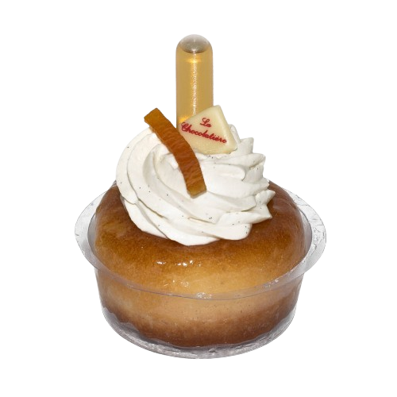

"Découvrez la richesse et
les saveurs des repas
à la française"
En France, les repas sont bien plus qu'une simple nécessité : ils incarnent un moment de partage, de plaisir et de tradition.
Découvrez les étapes clés d'un repas typique, de l'Apéritif au dessert.
Un chef en action
Les ambassadeurs de ce savoir :
Pierre Hermé
Issu d’une famille de boulangers pâtissiers sur plusieurs générations, Pierre Hermé s’est imposé comme l’un des plus grands chefs pâtissiers français, en atteste le titre de Meilleur pâtissier du monde qu’il remporte en 2016 par le World’s 50 Best Restaurants.
Connu comme le roi du macaron ou encore le Picasso de la pâtisserie, Pierre Hermé a mis au point de nombreux mets dont l’Ispahan, un macaron qui associe la framboise et le litchi à la rose. Il fonde la maison Pierre Hermé en 1998 qui va grandement participer à lui donner sa renommée mondiale. Près de 25 ans plus tard, l’entreprise est implantée sur tous les continents et dans toutes les plus grandes villes (Tokyo, Dubaï, Paris…).
Phillipe Conticini
Considéré par beaucoup comme le père de la pâtisserie moderne, Philippe Conticini a tout au long de sa carrière repoussé les chants du possible en cassant les codes et en mettant l’innovation au cœur de sa pratique.
Élu Pâtissier de l’année par le Gault & Millau en 1991, il est le propriétaire de deux restaurants étoilés et a même été l’entraîneur de l’équipe de France de pâtisserie, l’année de son sacre aux Championnats du Monde de 2003. En 2009, le chef pâtissier français réinvente les classiques de la pâtisserie française (tarte Tatin, Paris-Brest, Saint-Honoré) dans son livre de recettes. Certains changements qu’il a apportés à aux recettes sont même devenus le standard aujourd’hui.
Stéphanie Le Quellec
De son vrai nom Stéphanie Lecocq, Stéphanie Le Quellec est un cheffe cuisinière qui voit le jour à Enghien-les-Bains, le 6 décembre 1981. Petite fille, c'est au sein d'une famille gastronome qu'elle passe son enfance. De là, naît une véritable passion pour la cuisine. Cuisinant dès l’âge de 7 ans, c'est naturellement qu'elle intègre le lycée hôtelier Albert-de-Mun de Paris, où elle obtient un BTS, à l'âge de 19 ans.
C'est auprès de Philippe Legendre, meilleur ouvrier de France que Stéphanie Le Quellec démarre sa carrière au restaurant Le Cinq de l’hôtel George-V à Paris, en 2001. Sa passion pour la cuisine et sa détermination lui permettent de gravir rapidement les échelons en devenant sous-cheffe aux côtés d'Eric Briffard. La jeune femme, aux deux étoiles du guide Michelin, se lance un nouveau challenge en 2006 en allant travailler pour le groupe Four Seasons, au domaine de Terre Blanche, auprès de Philippe Jourdin.
C'est grâce au petit écran que Stéphanie Le Quellec se fait connaître en participant au concours Top Chef 2011, sur M6. Depuis, elle poursuit sa carrière travaille en 2013 comme cheffe du restaurant La Scène de l’hôtel Prince de Galles, à Paris. En 2017, elle réapparaît sur le petit écran en participant à Ma Mère cuisine mieux que la tienne !, une émission diffusée sur M6.
Alain Ducasse
Chef créateur et entrepreneur, Alain Ducasse est avant tout un esthète, un artisan passionné du bien vivre et du bien manger, qui a su marquer l'histoire de la gastronomie contemporaine. Reconnu comme l'un des chefs les plus influents de sa génération, il s'est distingué par son approche novatrice et son attachement aux produits de qualité, sublimés dans des créations culinaires qui allient tradition et modernité.
L'envie de transmettre est au cœur de ses projets et guide chacune de ses initiatives. Alain Ducasse a toujours cru en la force du partage, que ce soit avec ses équipes, ses clients ou les jeunes générations de cuisiniers. En s'entourant des meilleurs talents, il nourrit une dynamique collective où se mêlent excellence, rigueur et créativité, permettant à chacun de ses établissements de refléter sa vision unique de la cuisine.
Connu non seulement pour son exceptionnelle maîtrise de la gastronomie française, il s'est également aventuré au-delà des frontières culinaires en développant des projets ambitieux. Ces derniers témoignent de sa capacité à innover et à repousser les limites de son art, notamment à travers des collaborations dans le domaine de l'art contemporain et des expériences multisensorielles autour du bien vivre.
La recette du jour :
Le baba au rhum
- Origine : Dessert classique français.
- Base : Pâtisserie à pâte levée, légère et aérée.
- Forme : Souvent une couronne ou un petit gâteau individuel.
- Imbibage : Sirop au rhum pour une texture moelleuse et un goût distinctif.
- Garniture : Parfois agrémenté de crème chantilly ou de fruits frais.
- Caractéristique : Équilibre entre douceur et intensité du rhum.
- Occasions : Apprécié pour les repas festifs ou gourmands.